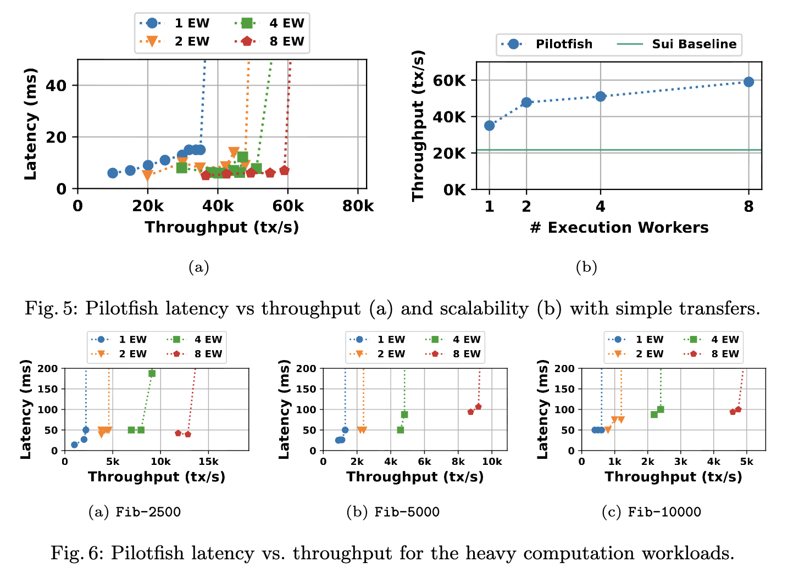

Quentin Kniep, Lefteris Kokoris-Kogias, Alberto Sonnino, Igor Zablotchi, Nuda Zhang
FC 2025
Scalability is a crucial requirement for modern large-scale systems, enabling elasticity and ensuring responsiveness under varying load. While cloud systems have achieved scalable architectures, blockchain systems remain constrained by the need to over-provision validator machines to handle peak load. This leads to resource inefficiency, poor cost scaling, and limits on performance. To address these challenges, we introduce Pilotfish, the first scale-out transaction execution engine for blockchains. Pilotfish enables validators to scale horizontally by distributing transaction execution across multiple worker machines, allowing elasticity without compromising consistency or determinism. It integrates seamlessly with the lazy blockchain architecture, completing the missing piece of execution elasticity. To achieve this, Pilotfish tackles several key challenges: ensuring scalable and strongly consistent distributed transactions, handling partial crash recovery with lightweight replication, and maintaining concurrency with a novel versioned-queue scheduling algorithm. Our evaluation shows that Pilotfish scales linearly up to at least eight workers per validator for compute-bound workloads, while maintaining low latency. By solving scalable execution, Pilotfish brings blockchains closer to achieving end-to-end elasticity, unlocking new possibilities for efficient and adaptable blockchain systems.

@article{kniep2024Pilotfish:Distributed,
author = {Q. Kniep and Lefteris Kokoris-Kogias and Alberto Sonnino and Igor Zablotchi and Nuda Zhang},
title = {Pilotfish: Distributed Transaction Execution for Lazy Blockchains},
year = {2024}
}